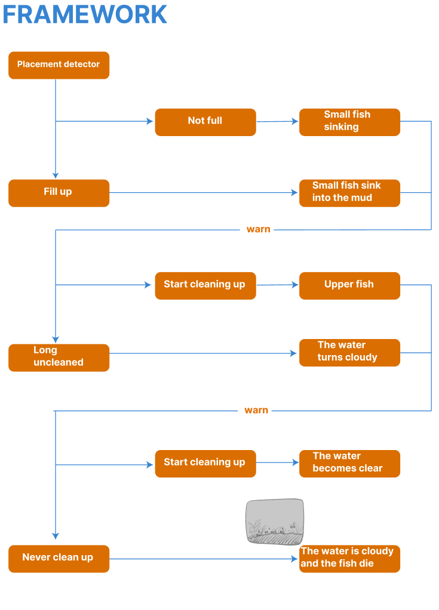
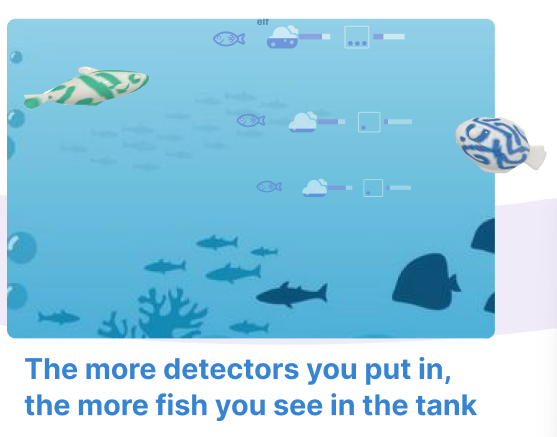
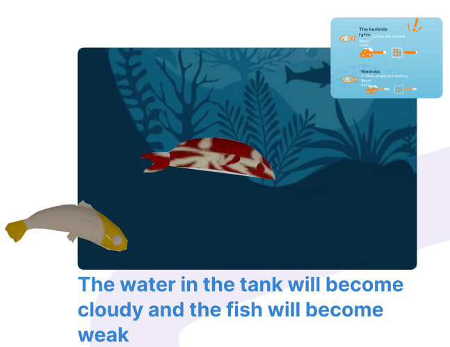
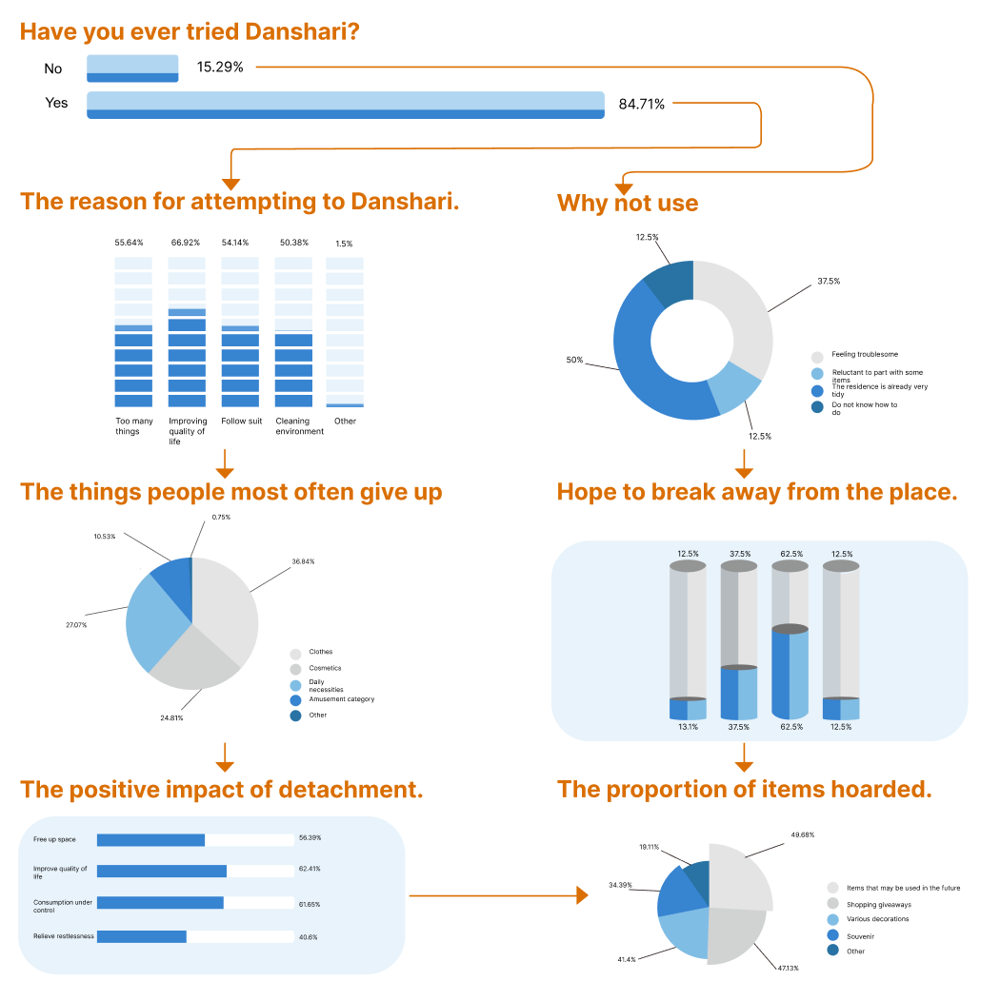

逻辑映射系统
将物理空间的实时占用数据映射为虚拟鱼缸的透明度与鱼群行为


清澈状态 (Optimal)
物理空间整洁，水质清澈，鱼群活跃。正向反馈增强用户的掌控感与愉悦感。

危机状态 (Crisis)
空间拥挤导致水质浑浊、鱼群下沉。通过负面情感反馈促使用户产生整理动机。

基于 157 份样本的情感共情强度分析
84%
用户承认在面对杂乱时会产生逃避心理
4 / 5
实验组对虚拟生态死亡表现出明显共情
40%
预期整理频率提升 (对比闹钟提醒)
设计总结
本项目成功将“断舍离”理念具象化。通过非侵入式的视觉反馈，我们发现用户更愿意为了“拯救”虚拟生命而行动，而非单纯为了整理而整理。
技术展望
未来计划引入更精准的 CV 识别技术，区分物品的类别（如衣物、书籍），并在鱼缸中对应生成不同的生物多样性，实现更细腻的情感交互。